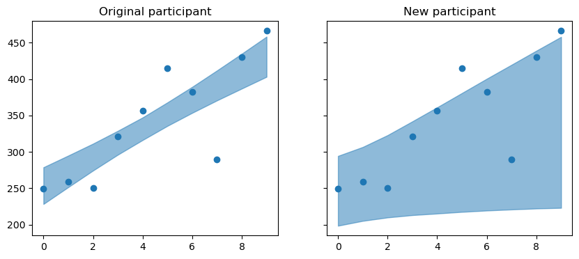
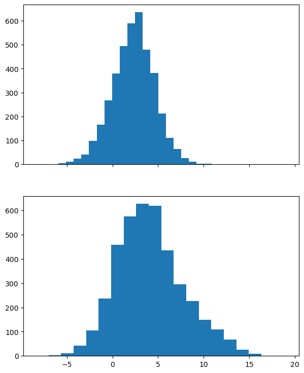
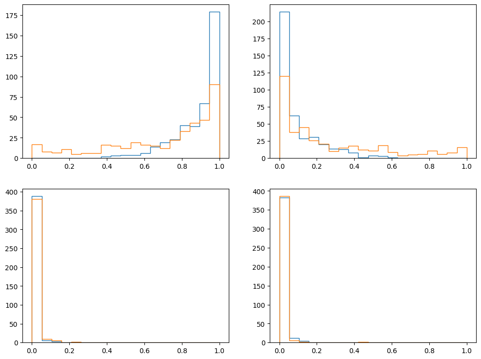

import arviz as az
import bambi as bmb
import matplotlib.pyplot as plt
import numpy as np
import pandas as pdNOTE This notebook is not part of the documentation. It’s not meant to be in the webpage. It’s something I wrote when I was testing the new functionality and I think it’s nice to have it handy.
data = bmb.load_data("sleepstudy")data.head()| Reaction | Days | Subject | |
|---|---|---|---|
| 0 | 249.5600 | 0 | 308 |
| 1 | 258.7047 | 1 | 308 |
| 2 | 250.8006 | 2 | 308 |
| 3 | 321.4398 | 3 | 308 |
| 4 | 356.8519 | 4 | 308 |
model = bmb.Model("Reaction ~ 1 + Days + (1 + Days | Subject)", data)
model Formula: Reaction ~ 1 + Days + (1 + Days | Subject)
Family: gaussian
Link: mu = identity
Observations: 180
Priors:
target = mu
Common-level effects
Intercept ~ Normal(mu: 298.5079, sigma: 261.0092)
Days ~ Normal(mu: 0.0, sigma: 48.8915)
Group-level effects
1|Subject ~ Normal(mu: 0.0, sigma: HalfNormal(sigma: 261.0092))
Days|Subject ~ Normal(mu: 0.0, sigma: HalfNormal(sigma: 48.8915))
Auxiliary parameters
sigma ~ HalfStudentT(nu: 4.0, sigma: 56.1721)idata = model.fit()Auto-assigning NUTS sampler...
Initializing NUTS using jitter+adapt_diag...
Multiprocess sampling (2 chains in 2 jobs)
NUTS: [Reaction_sigma, Intercept, Days, 1|Subject_sigma, 1|Subject_offset, Days|Subject_sigma, Days|Subject_offset]
100.00% [4000/4000 00:15<00:00 Sampling 2 chains, 0 divergences]
Sampling 2 chains for 1_000 tune and 1_000 draw iterations (2_000 + 2_000 draws total) took 15 seconds.
We recommend running at least 4 chains for robust computation of convergence diagnosticsdf_new = data.head(10).reset_index(drop=True)
df_new["Subject"] = "xxx"
df_new = pd.concat([df_new, data.head(10)])
df_new = df_new.reset_index(drop=True)
df_new| Reaction | Days | Subject | |
|---|---|---|---|
| 0 | 249.5600 | 0 | xxx |
| 1 | 258.7047 | 1 | xxx |
| 2 | 250.8006 | 2 | xxx |
| 3 | 321.4398 | 3 | xxx |
| 4 | 356.8519 | 4 | xxx |
| 5 | 414.6901 | 5 | xxx |
| 6 | 382.2038 | 6 | xxx |
| 7 | 290.1486 | 7 | xxx |
| 8 | 430.5853 | 8 | xxx |
| 9 | 466.3535 | 9 | xxx |
| 10 | 249.5600 | 0 | 308 |
| 11 | 258.7047 | 1 | 308 |
| 12 | 250.8006 | 2 | 308 |
| 13 | 321.4398 | 3 | 308 |
| 14 | 356.8519 | 4 | 308 |
| 15 | 414.6901 | 5 | 308 |
| 16 | 382.2038 | 6 | 308 |
| 17 | 290.1486 | 7 | 308 |
| 18 | 430.5853 | 8 | 308 |
| 19 | 466.3535 | 9 | 308 |
p = model.predict(idata, data=df_new, inplace=False, sample_new_groups=True)
reaction_draws = p.posterior["Reaction_mean"]
mean = reaction_draws.mean(("chain", "draw")).to_numpy()
bounds = reaction_draws.quantile((0.025, 0.975), ("chain", "draw")).to_numpy()fig, axes = plt.subplots(1, 2, figsize=(10, 4), sharey=True)
axes[0].scatter(df_new.iloc[10:]["Days"], df_new.iloc[10:]["Reaction"])
axes[1].scatter(df_new.iloc[:10]["Days"], df_new.iloc[:10]["Reaction"])
axes[0].fill_between(np.arange(10), bounds[0, 10:], bounds[1, 10:], alpha=0.5, color="C0")
axes[1].fill_between(np.arange(10), bounds[0, :10], bounds[1, :10], alpha=0.5, color="C0")
axes[0].set_title("Original participant")
axes[1].set_title("New participant");
data = pd.read_csv("../../tests/data/crossed_random.csv")
data["subj"] = data["subj"].astype(str)
data.head()| Unnamed: 0 | subj | item | site | Y | continuous | dummy | threecats | |
|---|---|---|---|---|---|---|---|---|
| 0 | 0 | 0 | 0 | 0 | 0.276766 | 0.929616 | 0 | a |
| 1 | 1 | 1 | 0 | 0 | -0.058104 | 0.008388 | 0 | a |
| 2 | 2 | 2 | 0 | 1 | -6.847861 | 0.439645 | 0 | a |
| 3 | 3 | 3 | 0 | 1 | 12.474619 | 0.596366 | 0 | a |
| 4 | 4 | 4 | 0 | 2 | -0.426047 | 0.709510 | 0 | a |
formula = "Y ~ 0 + threecats + (0 + threecats | subj)"
model = bmb.Model(formula, data)
model Formula: Y ~ 0 + threecats + (0 + threecats | subj)
Family: gaussian
Link: mu = identity
Observations: 120
Priors:
target = mu
Common-level effects
threecats ~ Normal(mu: [0. 0. 0.], sigma: [31.1617 31.1617 31.1617])
Group-level effects
threecats|subj ~ Normal(mu: 0.0, sigma: HalfNormal(sigma: [31.1617 31.1617 31.1617]))
Auxiliary parameters
sigma ~ HalfStudentT(nu: 4.0, sigma: 5.8759)idata = model.fit()Auto-assigning NUTS sampler...
Initializing NUTS using jitter+adapt_diag...
Multiprocess sampling (2 chains in 2 jobs)
NUTS: [Y_sigma, threecats, threecats|subj_sigma, threecats|subj_offset]
100.00% [4000/4000 00:08<00:00 Sampling 2 chains, 0 divergences]
Sampling 2 chains for 1_000 tune and 1_000 draw iterations (2_000 + 2_000 draws total) took 8 seconds.
We recommend running at least 4 chains for robust computation of convergence diagnosticsnew_data = pd.DataFrame(
{
"threecats": ["a", "a"],
"subj": ["0", "11"]
}
)
new_data| threecats | subj | |
|---|---|---|
| 0 | a | 0 |
| 1 | a | 11 |
p1 = model.predict(idata, data=new_data, inplace=False, sample_new_groups=True)fig, axes = plt.subplots(2, 1, figsize=(7, 9), sharex=True)
y1_grs = p1.posterior["Y_mean"].sel(Y_obs=0).to_numpy().flatten()
y2_grs = p1.posterior["Y_mean"].sel(Y_obs=1).to_numpy().flatten()
axes[0].hist(y1_grs, bins=20);
axes[1].hist(y2_grs, bins=20);
inhaler = pd.read_csv("../../tests/data/inhaler.csv")
inhaler["rating"] = pd.Categorical(inhaler["rating"], categories=[1, 2, 3, 4])
inhaler["treat"] = pd.Categorical(inhaler["treat"])
model = bmb.Model(
"rating ~ 1 + period + treat + (1 + treat|subject)", inhaler, family="categorical"
)
idata = model.fit(tune=200, draws=200)Only 200 samples in chain.
Auto-assigning NUTS sampler...
Initializing NUTS using jitter+adapt_diag...
Multiprocess sampling (2 chains in 2 jobs)
NUTS: [Intercept, period, treat, 1|subject_sigma, 1|subject_offset, treat|subject_sigma, treat|subject_offset]
100.00% [800/800 00:11<00:00 Sampling 2 chains, 1 divergences]
Sampling 2 chains for 200 tune and 200 draw iterations (400 + 400 draws total) took 12 seconds.
We recommend running at least 4 chains for robust computation of convergence diagnosticsdf_new = inhaler.head(2).reset_index(drop=True)
df_new["subject"] = [1, 999]
df_new| subject | rating | treat | period | carry | |
|---|---|---|---|---|---|
| 0 | 1 | 1 | 0.5 | 0.5 | 0 |
| 1 | 999 | 1 | 0.5 | 0.5 | 0 |
p = model.predict(idata, data=df_new, inplace=False, sample_new_groups=True)fig, axes = plt.subplots(2, 2, figsize=(12, 9))
bins = np.linspace(0, 1, 20)
for i, ax in enumerate(axes.ravel()):
x = p.posterior["rating_mean"].sel({"rating_dim": f'{i + 1}'}).to_numpy()
ax.hist(x[..., 0].flatten(), bins=bins, histtype="step", color="C0")
ax.hist(x[..., 1].flatten(), bins=bins, histtype="step", color="C1")